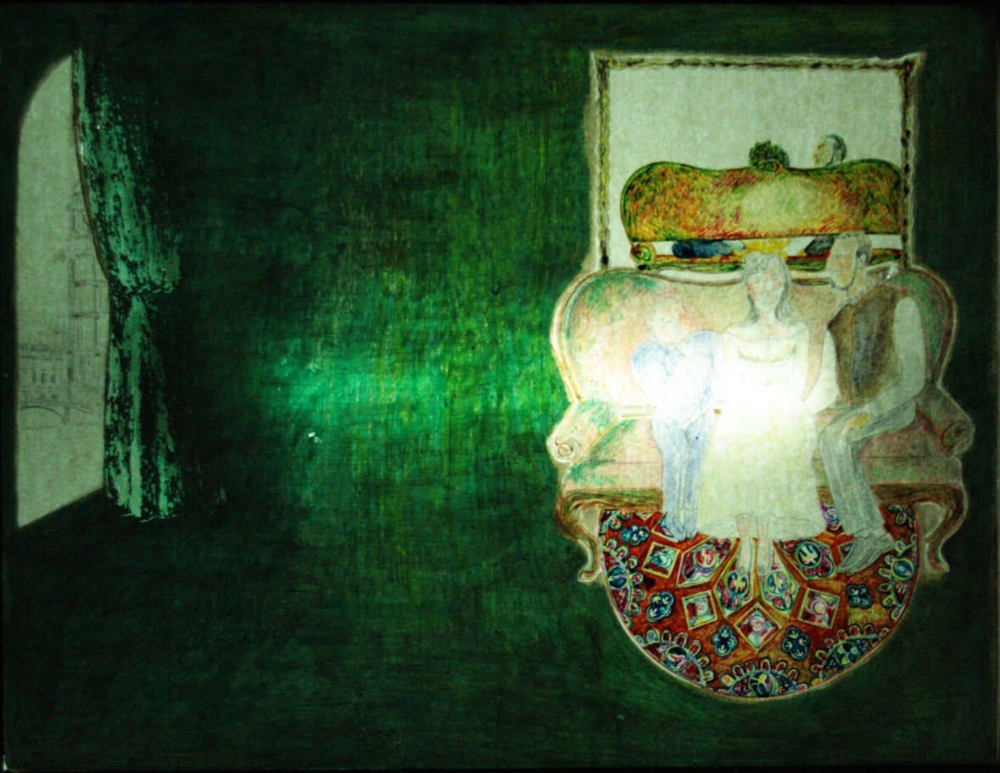

Edgar Allan Poe
Edgar Allan Poe nación el 19 de enero de 1809 en Boston, Massachusetts. Ejerció como poeta, crítico y editor. Es uno de los mayores maestros universales del relato corto, padre del terro psicológico, precursor del relato detectivesco y de la ciencia ficción. Contribuyó también a renovar la novela gótica, cuyas maneras adaptó a la realidad estadounidense para aproximarla a su público.
Ingresó a la unidad de Virginia, Caliornia en los Estados Unidos, donde destacó en el estudio de varios idiomas. Después, permaneció un tiempo en Boston, donde entró en los círculos literarios y publicó su primera obra, Tamerlan y Otros poemas (Tamerlane and Other Poems,1827), la cual se adscribía dentro del movimiento romántico y mostraba su vocación europeísta en la poesía, especialmente byroniana.
Le seguiriía un segundo trabajo tras abandonar el ejército: Al Aaraaf, Tamerlan y poemas menores(Al Aaraaf Tamerlane and Minor Peoms,1829). Y, a mediados de los años treinta se estableció en la ciudad de Baltimore, donde empezó a ejercer de periodista. Empezaría también en esta época su interés por los cuentos breves, género en el que Poe se convertiría pronto en el maestro indiscutible.
En 1840 logró publicar una antología de relatos, aunque ya habían aparecido anteriormente en los periódicos: Cuentos de lo grotesco y arabesco (Tales of the Grotesque and Arabesque, 1839). Contenía algunas de sus mejores obras como La caída de la Casa Usher. Gracias a esta publicación y a ganar varios premios, especialmente con el célebre poema El cuervo (The Raven , 1845), alcanzó la fama y pudo realizar una gira por el país recitando sus poemas.
El tres de octubre de 1849 el doctor James E. Snodgrass le halló en estado de enajenación mental frente a una taberna, en la ciudad de Baltimore, y vestido con ropas que no eran suyas. Se le trasladó rápidamente al hospital, donde sufrió alucinaciones que se iban alternando con momentos esporádicos de lucidez. Se ha dicho a menudo que sufría "delirium tremens", pero no se sabe a ciencia cierta. Murió al cabo de pocos días, el siete de octubre. Las causas de su muerte no se conocen con exactitud, pero los síntomas de su dolencia, descritos por el doctor Snodgrass, eran compatibles con la rabia, que podía haberle contagiado inadvertidamente un gato o un perro. En cualquier caso se sabe que había sufrido malaria un año antes, lo que le dejó en un estado de salud precario, y que estaba débil del corazón. Sus últimas palabras fueron: "Que Dios ayude a mi pobre alma".
Mixtificación
Reseña
Este cuento breve trata sobre un barón Ritzner von Jung descendía de una noble familia húngara, en la cual el narrador describe como comenzó su relación con el barón en el castillo de los Jung. A su llegada del narrador, Von Jung fue a visitarlo a sus habitaciones. Era muy joven de edad en aquel entonces, con lo cual resultabaun tanto imposible hacerse una idea de sus años basándose en su apariencia personal. Lo mismo podía haber tenido quince que cincuenta, y en realidad tenía veintiún años y siete meses. El barón no era para nada apuesto, más bien lo contrario. Lo que sí cabe destacar es el misterio que envolvía su persona. Usaba el sarcasmo como arma y era una persona bromista.
Un día realizó una fiesta, la cual se alargó por beber más vino. Había un gran debate entre los asistentes y el barón, pero uno de ellos expresaba un interés un tanto peculiar. Como el barón estaba haciendo un monólogo, llegó un punto en que el asistente ya no pudo, finalmente opinó al respecto dejando al barón perplejo y pálido ante tal comentario. Después de llegar a su habitación, el barón le envió una carta a su invitado con el sarcasmo y humor característico de él. Aquel invitado, después de leer la carta, comenzó a reír y entendió lo que el barón le quiso decir.
Crítica/Conclusión
El cuento a mi opinión, considero que pone una lección importante, ya que no todos poseen la misma habilidad en cierto campo, es por ello que si uno quiere debatir ante algo o dar alguna opinión, se deben tener los conocimientos para poder hacerlo y evitar malos entendidos. Si se empieza el debate o discución sin fundamentos y la otra u otras personas saben acerca del tema, lo más seguro es que esa persona se quedé en vergüenza por no saber contestar correctamente.
Por qué el pequeño francés lleva la mano en cabestrillo
Reseña
 Por qué el pequeño francés lleva la mano en cabestrillo es un pequeño relato humorístico en el que el protagonista, un maduro caballero londinense cuenta en primera persona el divertido intento de seducción de una dama de la alta sociedad por parte de un caballero francés y de él mismo, que después de una simpática y equívoca situación acabará mal para ambos.
Crítica/Conclusión
La seducción para muchos es un arte que no cualquiera tiene, se debe tener cierta clase para ello, sin referirse a la clase social. Se debe nacer para poder seducir o saberlo hacer, cabe mencionar que no todo puede salir como uno esperaría, la vida da mil vueltas pero todo puede tomarse con humor.
El aliento perdido
Reseña
 Se puede observar que el narrador en este relato de Poe es un narrador-personaje en primera persona.
En esta situación se sabe lo que el personaje está sintiendo y pensando, dado que, el mismo personaje es el que está contando la historia.
Al contar su historia, la serie de acontecimientos que le ocurrieron, y como cuenta sus acontecimientos se puede decir también que es
protagonista porque es un personaje que comunica a la acción su primer impulso dinámico. Vemos que él reacciona ante la infidelidad de su mujer,
planea su “huida” a otra ciudad, y es ahí donde ocurre la trama de la historia.
Se puede observar que el narrador en este relato de Poe es un narrador-personaje en primera persona.
En esta situación se sabe lo que el personaje está sintiendo y pensando, dado que, el mismo personaje es el que está contando la historia.
Al contar su historia, la serie de acontecimientos que le ocurrieron, y como cuenta sus acontecimientos se puede decir también que es
protagonista porque es un personaje que comunica a la acción su primer impulso dinámico. Vemos que él reacciona ante la infidelidad de su mujer,
planea su “huida” a otra ciudad, y es ahí donde ocurre la trama de la historia.
Crítica/Conclusión
El relato nos muestra una visión muy conocida de Edgar Allan Poe, lo obscuro, lo macabro, el miedo y el terror psicológico de sus personajes, la pluma gótica que mancha sus páginas de surrealismo y símbolos que a veces no podemos entender. El “aliento” para este relato no sabemos con exactitud qué quiere decir, pero sabemos que es más profundo que el simple aliento, nos da a entender que es algo vital y que cuando se queda sin él, es como una muerte en vida, y aquel que roba un “aliento” sufre de la misma manera al tener dos o más, ya que no existe capacidad para mantener ambos o se requiere un gran esfuerzo, podría entenderse como algo metafórico.
El duque de l'Omelette
Reseña
 El Duque de L'Omelette (The Duc de l'Omelette) es un relato fantástico de Edgar Allan Poe, en el cual,
disimulado bajo una elegante capa de ironía, El Duque de L'Omelette relata la historia de un hombre que ha muerto,
y negocia con el diablo su retorno al mundo de los vivos.
El Duque de L'Omelette (The Duc de l'Omelette) es un relato fantástico de Edgar Allan Poe, en el cual,
disimulado bajo una elegante capa de ironía, El Duque de L'Omelette relata la historia de un hombre que ha muerto,
y negocia con el diablo su retorno al mundo de los vivos.
Crítica/Conclusión
Muchas veces los humanos queremos grandes cosas para nosotros, pero todo es parte de un beneficio propio y no de algo que nos beneficie. Esto intenta explicar el cuento, no debemos desobedecer a la naturaleza, quizás y se pueda romper un ciclo de ella.
Catro bestias en una
Reseña
Se asegura que en Siria y otras naciones, hubo dieciséis ciudades con el mismo nombre, aparte de Antioquía en donde residía Seleuco Nicanor, el primer rey del país después de la muerte de Alejandro Magno, se convirtió inmediatamente en residencia de la monarquía siria. En el Siglo Diecinueve Antioquía estaba en un lamentable estado de decaimiento. Quedando totalmente destruída, en tres diferentes períodos, por tres terremotos sucesivos. Fue encontrado en un estado tan desolado y ruinoso que el patriarca debió mudar su residencia a Damasco. El pueblo es abarrotado junto a bestias salvajes. Cada animal está siguiendo muy tranquilamente a su amo. Algunos pocos son guiados con sogas alrededor del cuello, pero estos son mayormente los menos o solamente especies tímidas. El león, el tigre, y el leopardo están enteramente sin ningún freno. Todos han sido entrenado sin dificultad para la presente profesión, y siguen a sus respectivos dueños.
Crítica/Conclusión
Es una lectura difícil, por la abundancia de términos y múltiples situaciones que describe de una manera rápida y seguida la una de la otra. Sin embargo, se puede llegar a la idea principal que es que Antíoco, rey de Siria en su singular carrera por vencer a las bestias, llega glorioso al hipódromo.